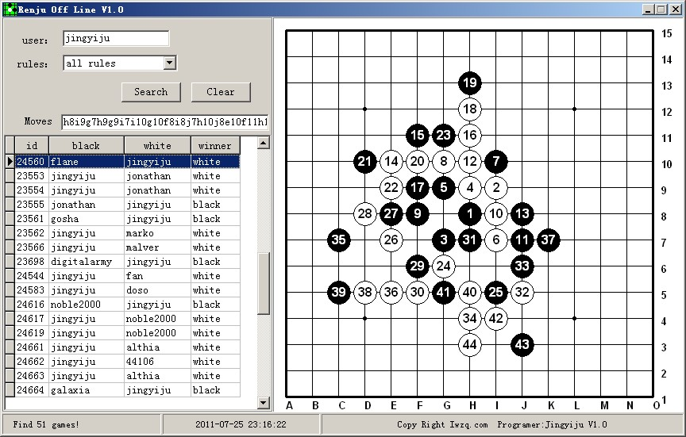

爱五子棋新软件：renjuOffline 英文版发布！
首页
五子棋软件
#1 爱五子棋新软件：renjuOffline 英文版发布！ 作者：小丸.net 发表时间：2011-7-25 23:17:27
renju offline 是renju offline的一个离线数据包，目前拥有对局数4万多局，现分享给大家以供查询：

应国际友人要求，该软件做成英文版。。。中国人看起来应该不难。
点击这里下载
PS:有人还不知道RENJU OFFLINE是什么，这是一个下慢棋的网站。。。。与上回写的慢棋网站离线浏览器是同一个网站的，这个软件不用上网即可浏览。
［此帖子已被 小丸.net 在 2011-7-25 23:24:10 编辑过］
［ gerbo 于 2011-7-26 1:46:30 时花20金币送鲜花一朵］
［ gerbo 于 2011-7-26 1:46:36 时花20金币送鲜花一朵］
［ gerbo 于 2011-7-26 1:46:43 时花20金币送鲜花一朵］
［ 踵酃 于 2011-7-26 2:16:51 时花20金币送鲜花一朵］
［ 踵酃 于 2011-7-26 2:17:01 时花20金币送鲜花一朵］
［ 小红眼镜 于 2011-7-26 9:44:16 时花20金币送鲜花一朵］
［ 非黑既白 于 2011-7-26 9:54:53 时花20金币送鲜花一朵］
［ 逆刃 于 2011-7-26 10:26:39 时奖励此帖[金币加 100 威望加1］
［ 灯塔连珠 于 2011-7-26 12:02:30 时花20金币送鲜花一朵］
［ 第五象限 于 2011-7-26 19:52:54 时花20金币送鲜花一朵］
#2 Re:爱五子棋新软件：renjuOffline 英文版发布！ 作者：小飞 发表时间：2011-7-25 23:23:22
下了瞅瞅，谢谢~~
#3 Re:爱五子棋新软件：renjuOffline 英文版发布！ 作者：gerbo 发表时间：2011-7-26 0:11:17
这个东西厉害。。刚下载看了。还没弄清楚怎么弄。。
对了我只发现按鼠标右键是退后一步，那我想恢复下上一步怎么办了？
对丸子大哥的辛苦工作表示由衷的感谢。。也感谢外国友人的提议！！
#4 Re:爱五子棋新软件：renjuOffline 英文版发布！ 作者：小丸.net 发表时间：2011-7-26 9:39:07
感谢AIVO给我的灵感。。。。这个软件还有待于进步，必要时会整合到五子妙手中去。因为4万多谱，数据库就有20多M，现在在考虑怎么缩小他的大小，提高他的检索速度。
#5 Re:Re:爱五子棋新软件：renjuOffline 英文版发布！ 作者：非黑既白 发表时间：2011-7-26 9:53:09
引用：
原文由 gerbo 发表于 2011-7-26 0:11:17 :
这个东西厉害。。刚下载看了。还没弄清楚怎么弄。。
对了我只发现按鼠标右键是退后一步，那我想恢复下上一步怎么办了？
对丸子大哥的辛苦工作表示由衷的感谢。。也感谢外国友人的提议！！
右键是退一步，当然是按左键自己下喽
［ gerbo 于 2011-7-26 18:29:04 时花20金币送鲜花一朵］
#6 Re:爱五子棋新软件：renjuOffline 英文版发布！ 作者：非黑既白 发表时间：2011-7-26 9:54:18
做善事获得鲜花，天经地义。我也送一朵
#7 Re:爱五子棋新软件：renjuOffline 英文版发布！ 作者：小元 发表时间：2011-7-26 10:02:01
这软件不错，以后查谱容易多了
#8 Re:爱五子棋新软件：renjuOffline 英文版发布！ 作者：梧桐风 发表时间：2011-7-26 10:50:03
昨天晚上用手机下载了，现在木有流量啦，流量超标来支持
#9 Re:爱五子棋新软件：renjuOffline 英文版发布！ 作者：屏蔽 发表时间：2011-7-27 20:16:15
这软件……不能按照棋谱来查对局么？？
#10 Re:爱五子棋新软件：renjuOffline 英文版发布！ 作者：梧桐风 发表时间：2011-7-28 2:20:44
按开局查询？这个功能不错，建议升级。对了，单击棋子不能前进啊
#11 Re:爱五子棋新软件：renjuOffline 英文版发布！ 作者：屏蔽 发表时间：2011-7-28 7:31:04
1、现在棋手下棋，研究变化重于研究棋手，因此按棋谱查询应该是主要的功能，按棋手查询才是附加。
2、现在查询出的对局都是可编辑的，这个原则上并无必要，当然要是能设立“打谱模式”和“研究模式”的切换自然更好。
#12 Re:爱五子棋新软件：renjuOffline 英文版发布！ 作者：白河愁 发表时间：2011-7-28 12:57:13
能否增加按rating过滤对局的设置？比如不显示rating低于1600的……
#13 Re:爱五子棋新软件：renjuOffline 英文版发布！ 作者：dyccj 发表时间：2011-8-23 21:49:31
好东西啊，谢谢了，软件以后会更新棋谱吗
#14 Re:爱五子棋新软件：renjuOffline 英文版发布！ 作者：启蒙 发表时间：2011-8-24 9:40:37
如果有打谱模式就好了。有个后退，前进按钮。
#15 Re:爱五子棋新软件：renjuOffline 英文版发布！ 作者：灯塔连珠 发表时间：2011-8-31 16:22:11
多久更新一次呀！嘻嘻里边还有我的对局呢！